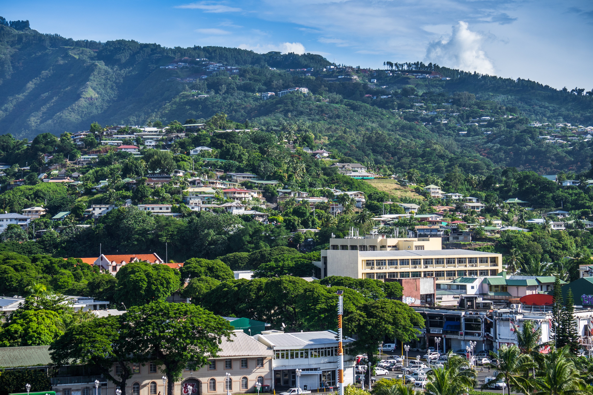

Island Activities
There is always something to do on Taniti! Whether you're planning a trip, or you're already here and looking to find a way to spend your time, we have plenty of things to enjoy.
Fishing Tours
As an island nation, Taniti has a rich fishing history. Charter a fishing tour and see how the island's indigenous population sustained themselves for thousands of years!

Diving
Taniti is an oasis and these photos only scratch the surface! Take a dive below and see the hidden wonders of our beautiful island. From fish to coral, shells and marine mammals, Taniti has adventures everywhere you look!

In the City
Taniti City plays host to many activities fit for any interest. Visit the Museum of Tanitian History, have dinner and drinks at one of many local pubs, visit our new microbrewery, visit an art gallery, and starting next year, play golf at a brand-new nine-hole golf course! Whatever your heart desires, you can find it here.

Hiking
Love the water, but want to see some incredible views from above? Explore the rainforest or climb the side of the volcano that formed the island thousands of years ago. Views that cameras can't replicate, animals and birds that aren't found anywhere else, unique foliage, guided tours or solo hikes- You can have it all! It's all here on the Tanitian Island.